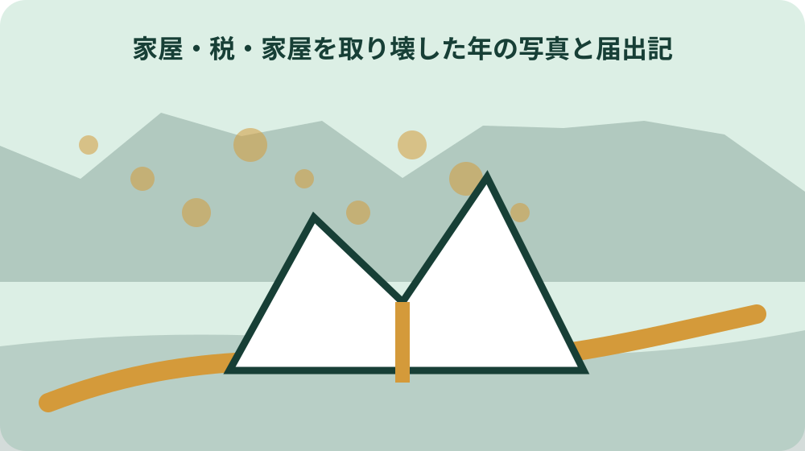
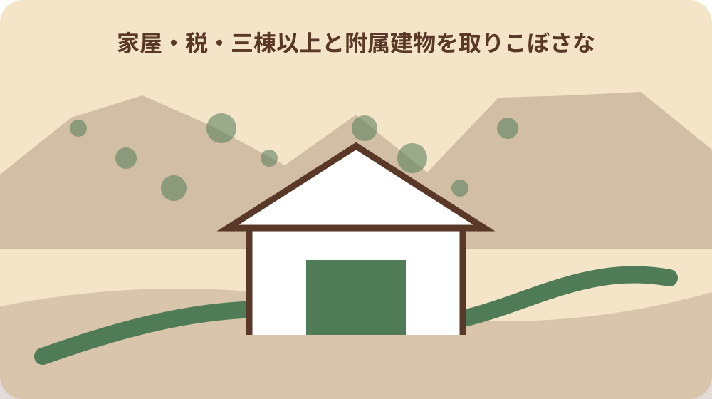

先に結論を確認する
この記事の答え：終わりません。町の固定資産税の届出と、登記建物についての法務局手続は別です。
森町で最初に照合する条件：町の家屋物件番号と登記の家屋番号を同じものと思わず、各資料の表記を並べる。
解体前に課税明細と登記を並べる
確認の起点は町の届出は家屋物件番号、法務局の様式は不動産番号や家屋番号を扱います。家屋を取り壊した年の写真と届出記録を揃えるでは、別の資料から推測せず、該当する欄と確認日を一緒に残します。
この情報が必要になるのは似た番号でも役割が異なり、片方だけでは対象棟を誤るおそれがあります。家屋を取り壊した年の写真と届出記録を揃えるを家族や担当者と共有するときは、数字や固有名詞だけを抜き出さず、その数字が示す条件まで伝えます。
実際の手順は課税明細、登記事項、配置図の三列を作り、用途・構造・床面積で照合します。家屋を取り壊した年の写真と届出記録を揃えるの記録には、確認した資料名、対象住所または商品、次に連絡する相手を一行で追記すると引継ぎが途切れません。
ここで止めて確かめたいのは番号が一致しないこと自体を誤りと決めず、税務課と法務局それぞれへ確認します。公式資料に書かれていない個別判断は未確認のまま区別し、町または表示責任者から回答を得た日付を後で足します。
配置図に棟番号と撮影方向を入れる
確認の起点は森町の届出記入例は裏面の取り壊し家屋配置図を求めています。家屋を取り壊した年の写真と届出記録を揃えるでは、別の資料から推測せず、該当する欄と確認日を一緒に残します。
この情報が必要になるのは母屋、物置、車庫が同じ地番にあると、全景一枚では取り壊した棟が特定しにくくなります。家屋を取り壊した年の写真と届出記録を揃えるを家族や担当者と共有するときは、数字や固有名詞だけを抜き出さず、その数字が示す条件まで伝えます。
実際の手順は敷地入口を基準に棟番号を振り、矢印で撮影方向と写真番号を書き込みます。家屋を取り壊した年の写真と届出記録を揃えるの記録には、確認した資料名、対象住所または商品、次に連絡する相手を一行で追記すると引継ぎが途切れません。
ここで止めて確かめたいのは隣接建物や越境物を取り壊したと誤解されないよう、残す建物も輪郭で示します。公式資料に書かれていない個別判断は未確認のまま区別し、町または表示責任者から回答を得た日付を後で足します。
解体前写真で用途・構造・階数を残す
確認の起点は届出欄には用途、構造、屋根、階数、評価面積が用意されています。家屋を取り壊した年の写真と届出記録を揃えるでは、別の資料から推測せず、該当する欄と確認日を一緒に残します。
この情報が必要になるのは外観四面と室内だけでなく、屋根形状や附属建物との接続部を撮る意味があります。家屋を取り壊した年の写真と届出記録を揃えるを家族や担当者と共有するときは、数字や固有名詞だけを抜き出さず、その数字が示す条件まで伝えます。
実際の手順は写真名に棟番号、方角、年月日を入れ、課税明細の用途と照合します。家屋を取り壊した年の写真と届出記録を揃えるの記録には、確認した資料名、対象住所または商品、次に連絡する相手を一行で追記すると引継ぎが途切れません。
ここで止めて確かめたいのは写真だけで構造を断定できない場合は、契約資料や登記表記を優先して記録します。公式資料に書かれていない個別判断は未確認のまま区別し、町または表示責任者から回答を得た日付を後で足します。

取壊し日を一つの時系列へそろえる
確認の起点は町の届出と法務局の記載例はいずれも取壊し日を扱います。家屋を取り壊した年の写真と届出記録を揃えるでは、別の資料から推測せず、該当する欄と確認日を一緒に残します。
この情報が必要になるのは工事開始日、建物がなくなった日、契約上の完了日は同じとは限りません。家屋を取り壊した年の写真と届出記録を揃えるを家族や担当者と共有するときは、数字や固有名詞だけを抜き出さず、その数字が示す条件まで伝えます。
実際の手順は施工者の証明、完了写真、請求書、申請書の日付を一覧にして差を説明できるようにします。家屋を取り壊した年の写真と届出記録を揃えるの記録には、確認した資料名、対象住所または商品、次に連絡する相手を一行で追記すると引継ぎが途切れません。
ここで止めて確かめたいのは請求日を滅失日と置き換えず、施工者へ原因日付の根拠を確認します。公式資料に書かれていない個別判断は未確認のまま区別し、町または表示責任者から回答を得た日付を後で足します。
町の届出者と所有者を分けて記入する
確認の起点は森町の様式は窓口に来る届出者と納税義務者である所有者を別欄にします。家屋を取り壊した年の写真と届出記録を揃えるでは、別の資料から推測せず、該当する欄と確認日を一緒に残します。
この情報が必要になるのは相続人や代理人が動く案件では、誰が提出したかと誰の家屋かを区別できます。家屋を取り壊した年の写真と届出記録を揃えるを家族や担当者と共有するときは、数字や固有名詞だけを抜き出さず、その数字が示す条件まで伝えます。
実際の手順は両者の住所、氏名、日中連絡先を確認し、代理関係の資料を同じ束にします。家屋を取り壊した年の写真と届出記録を揃えるの記録には、確認した資料名、対象住所または商品、次に連絡する相手を一行で追記すると引継ぎが途切れません。
ここで止めて確かめたいのは家族が提出した事実だけで所有名義が変わったとは扱いません。公式資料に書かれていない個別判断は未確認のまま区別し、町または表示責任者から回答を得た日付を後で足します。
三棟以上と附属建物を取りこぼさない
確認の起点は記入例は二棟分の表を設け、三棟以上は裏面にも記入するよう示します。家屋を取り壊した年の写真と届出記録を揃えるでは、別の資料から推測せず、該当する欄と確認日を一緒に残します。
この情報が必要になるのは小さな物置や作業所も課税台帳または登記に載る可能性があり、母屋だけの記録では不足します。家屋を取り壊した年の写真と届出記録を揃えるを家族や担当者と共有するときは、数字や固有名詞だけを抜き出さず、その数字が示す条件まで伝えます。
実際の手順は現地の全建物を数え、残す棟、壊す棟、既にない棟を色分けします。家屋を取り壊した年の写真と届出記録を揃えるの記録には、確認した資料名、対象住所または商品、次に連絡する相手を一行で追記すると引継ぎが途切れません。
ここで止めて確かめたいのは市販物置だから対象外と決めず、町の家屋要件に照らして税務課へ確認します。公式資料に書かれていない個別判断は未確認のまま区別し、町または表示責任者から回答を得た日付を後で足します。
解体途中と完了後を同じ位置から撮る
確認の起点は途中写真は対象棟が実際に撤去された過程を、完了写真は跡地の状態を示します。家屋を取り壊した年の写真と届出記録を揃えるでは、別の資料から推測せず、該当する欄と確認日を一緒に残します。
この情報が必要になるのは同じ撮影位置を使うと、残存基礎や接続部分の違いが比較できます。家屋を取り壊した年の写真と届出記録を揃えるを家族や担当者と共有するときは、数字や固有名詞だけを抜き出さず、その数字が示す条件まで伝えます。
実際の手順は着工、上屋撤去、基礎撤去、整地の節目で配置図の矢印どおりに撮影します。家屋を取り壊した年の写真と届出記録を揃えるの記録には、確認した資料名、対象住所または商品、次に連絡する相手を一行で追記すると引継ぎが途切れません。
ここで止めて確かめたいのは地中障害物が残るかどうかは写真外の契約条件なので、施工者の完了書類でも確認します。公式資料に書かれていない個別判断は未確認のまま区別し、町または表示責任者から回答を得た日付を後で足します。
跡地利用と次の建築予定を記録する
確認の起点は森町の届出には跡地用途、建築確認の有無、次の建築予定、完成予定日の欄があります。家屋を取り壊した年の写真と届出記録を揃えるでは、別の資料から推測せず、該当する欄と確認日を一緒に残します。
この情報が必要になるのは住宅を壊した後の土地利用は住宅用地特例の扱いと関係するため、空欄にしない意味があります。家屋を取り壊した年の写真と届出記録を揃えるを家族や担当者と共有するときは、数字や固有名詞だけを抜き出さず、その数字が示す条件まで伝えます。
実際の手順は駐車、菜園、空地、建替えなど現時点の予定を記し、変更時は確認日を更新します。家屋を取り壊した年の写真と届出記録を揃えるの記録には、確認した資料名、対象住所または商品、次に連絡する相手を一行で追記すると引継ぎが途切れません。
ここで止めて確かめたいのは将来の希望を既に決まった用途として書かず、未定なら未定として税務課へ相談します。公式資料に書かれていない個別判断は未確認のまま区別し、町または表示責任者から回答を得た日付を後で足します。
翌年度の家屋と土地を別々に確認する
確認の起点は滅失確認後は翌年度から当該家屋の固定資産税が課税されなくなります。家屋を取り壊した年の写真と届出記録を揃えるでは、別の資料から推測せず、該当する欄と確認日を一緒に残します。
この情報が必要になるのは一方、住宅用地特例が外れることで土地の税額は上がる場合があります。家屋を取り壊した年の写真と届出記録を揃えるを家族や担当者と共有するときは、数字や固有名詞だけを抜き出さず、その数字が示す条件まで伝えます。
実際の手順は翌年度の課税明細で家屋欄が消えたか、土地欄の区分がどう変わったかを別々に照合します。家屋を取り壊した年の写真と届出記録を揃えるの記録には、確認した資料名、対象住所または商品、次に連絡する相手を一行で追記すると引継ぎが途切れません。
ここで止めて確かめたいのは家屋税がなくなることを土地を含む総額減少と同じ意味にしません。公式資料に書かれていない個別判断は未確認のまま区別し、町または表示責任者から回答を得た日付を後で足します。

町への届出と滅失登記を二本立てで管理する
確認の起点は税務課の現地確認と法務局の滅失登記は所管も目的も異なります。家屋を取り壊した年の写真と届出記録を揃えるでは、別の資料から推測せず、該当する欄と確認日を一緒に残します。
この情報が必要になるのは登記建物は町へ提出した控えだけで登記記録が閉鎖されたとは確認できません。家屋を取り壊した年の写真と届出記録を揃えるを家族や担当者と共有するときは、数字や固有名詞だけを抜き出さず、その数字が示す条件まで伝えます。
実際の手順は提出日、受付先、受付番号、補正連絡、完了書類を二列の進捗表にします。家屋を取り壊した年の写真と届出記録を揃えるの記録には、確認した資料名、対象住所または商品、次に連絡する相手を一行で追記すると引継ぎが途切れません。
ここで止めて確かめたいのは一方の完了をもう一方の完了欄へ転記せず、各窓口の成果物で閉じます。公式資料に書かれていない個別判断は未確認のまま区別し、町または表示責任者から回答を得た日付を後で足します。
一か月の登記期限から必要書類を逆算する
確認の起点は法務局の案内では滅失日から一か月以内の申請義務が示されています。家屋を取り壊した年の写真と届出記録を揃えるでは、別の資料から推測せず、該当する欄と確認日を一緒に残します。
この情報が必要になるのは施工証明や会社資格証明の取得に日数がかかると、解体後に集め始めては余裕が減ります。家屋を取り壊した年の写真と届出記録を揃えるを家族や担当者と共有するときは、数字や固有名詞だけを抜き出さず、その数字が示す条件まで伝えます。
実際の手順は契約時に証明書の発行者、予定日、連絡先を決め、完了写真と同時に受け取ります。家屋を取り壊した年の写真と届出記録を揃えるの記録には、確認した資料名、対象住所または商品、次に連絡する相手を一行で追記すると引継ぎが途切れません。
ここで止めて確かめたいのはオンライン申請でも書面添付の到達期限が別にあるため、送付日を申請日と混同しません。公式資料に書かれていない個別判断は未確認のまま区別し、町または表示責任者から回答を得た日付を後で足します。
大石の視点：壊した後ほど境界と記録を残す
確認の起点はここまでの届出欄と期限は公的資料で確認できる事実です。家屋を取り壊した年の写真と届出記録を揃えるでは、別の資料から推測せず、該当する欄と確認日を一緒に残します。
この情報が必要になるのは私は建物が消える前に、外壁から境界標、道路、隣家までの位置関係を撮るべきだと考えます。家屋を取り壊した年の写真と届出記録を揃えるを家族や担当者と共有するときは、数字や固有名詞だけを抜き出さず、その数字が示す条件まで伝えます。
実際の手順は売却が未定でも、跡地の排水、残存基礎、越境物を実家カルテへ加えると次の判断に使えます。家屋を取り壊した年の写真と届出記録を揃えるの記録には、確認した資料名、対象住所または商品、次に連絡する相手を一行で追記すると引継ぎが途切れません。
ここで止めて確かめたいのはこれは私見であり、境界確定や登記の代わりではないため、必要時は土地家屋調査士等へ確認します。公式資料に書かれていない個別判断は未確認のまま区別し、町または表示責任者から回答を得た日付を後で足します。